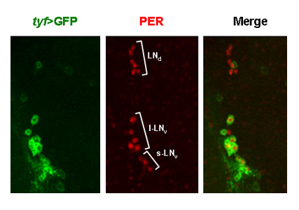
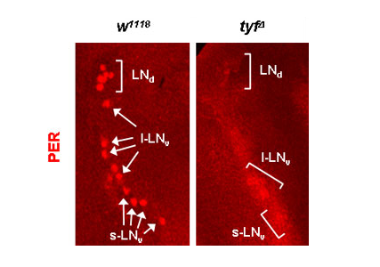

Report by Subjects
Report by Subjects
KAIST RESEARCH ACHIEVEMENTS
Discovery of a novel gene of circadian rhythm and investigating Its mechanism
Professor (Department of Biological Sciences) Joonho CHOE
Summary
A New Epoch in Circadian Rhythm Research Professor Choe's research team has discovered a circadian rhythm gene, twenty-four (tyf), in Drosophila and has revealed that regulation of the translational phase of protein synthesis is paramount in the mechanism leading to the function of the biological clock. The findings of his research were published in Nature.
R&D Report
cn Earth, we experience night and day as a result of the Earth rotating On its axis, which also brings about changes in light intensity, temperature, and so on. In order to adjust to such changes, humans, fruit flies, mice, and many more living organisms are 'equipped' with biological clocks that function on a circadian rhythm. A circadian biological clock enables and regulates various biological processes taking place in the body on a 24-hour cycle, even in the absence of external cues such as heat and light. However, once information on actual time is provided through such external cues, the biological clock resets itself to synchronize to the cycle in which the environment changes. When we travel abroad, we often experience jet lag, which subsides after a few days. This is part of the process where our internal biological clock synchronizes itself to the new time zone. The circadian rhythm is known to be an important factor in controlling sleep in organisms. For example, the advanced sleep phase syndrome is a sleep disorder related to the biological clock, which causes the patient to go to sleep and wake up very early.
Professor Choe's research team carried out experiments on Drosophila. Fruit flies are widely used in biological rhythm research due to the ease in multiplying them. It is also relatively simple to carry out genetic experiments on them and, above all, their biological clock system is very similar to that of humans and mice. The Drosophila' s brain contains neurons that control the biological rhythm, and each of the neurons has its own 'molecular clock' and is thus able to create a circadian rhythm. Six genes play a major role in this 'clockwork', whereby they function in relation to each other as different components of a common clock in order to maintain a biological clock system that can function even in the absence of external cues. These genes are regulated over several stages: assembly of transcriptional elements, posttranslational regulation such as phosphorylation, and protein disassembly. Adult fruit flies usually emerge from pupae in the early morning, and are able to estimate the change in light intensity in advance and show high activity before dawn and dusk. They also exhibit 24-hour circadian behavior in constant absence of light.
Implications and Future Prospects
 Pic 1. Twenty-four (tyf) and PERIOD (PER) expression within Drosophila brain.
 Pic 2. 투Decreased expression of PERIOD in Drosophila with mutant twenty-four genes.
Research Funding
ㆍMinistry of Education, Science and Technology, 21C Frontier R&D Program
Publication
ㆍ| Lim, C., Lee, J., Choi, C., Kilman, V. L., Kim, J., Park, S.M .,Jang, S. K., Allada, R., and Choe, J. (2011) The novel gene twenty-four defines a critical translational step in the Drosophila clock. Nature 470, 399-403.